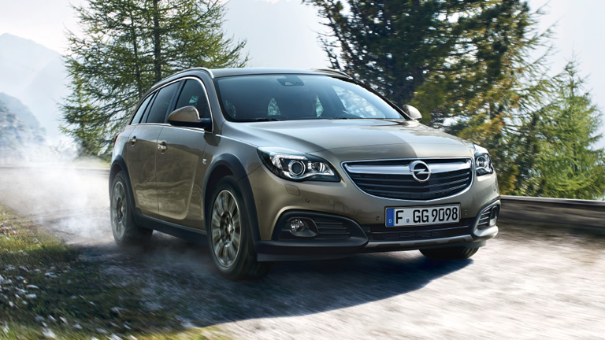

Opel Insignia Country Tourer
Краткое описание:
Великолепный полноприводный автомобиль для города и загородных поездок.
Когда практичность становится
стильной? Взгляните внимательнее на Opel Insignia Country Tourer - к элегантному кузову Sports Tourer
добавлены массивные защитные панели, в результате получился абсолютно новый уникальный дизайн. Очень
удобный в городе и за его пределами. Вместительный и роскошный,прекрасный дизайн и современные
технологии.
Подробное описание:
Встречайте Insignia Country Tourer. Эта версия базируется на кузове Sports Tourer, но ее внешний вид стал похожим на внедорожник. При взгляде сбоку Country Tourer отчетливо отличается от Sports Tourer благодаря дополнительным 15 мм дорожного просвета и завышенному шасси, которое делает его идеальным автомобилем для проселочных дорог и пересеченной местности.
Основные отличия в дизайне:
Защитные панели: декоративная панель с блестящей серебристой отделкой выступает из-под переднего
бампера. Сзади она расположена так же и обрамляется двумя блестящими выхлопными трубами.
Защитные накладки: черные молдинги на боковых порогах и нижних частях кузова придают яркость колесным
аркам. Передние противотуманные фары встроены в молдинги, это объединяет их с колесными арками и
подчеркивает широкий профиль передней части автомобиля.
Технические характеристики Opel Insignia Country Tourer:
Opel Insignia Country Tourer Technical Leaflets